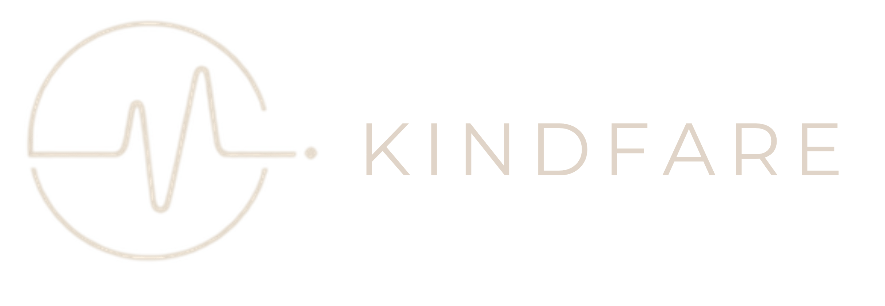

9:41
Skip
{{ stepCounter }}
Let's build your health profile
Five quick steps and KindFare becomes uniquely yours. We've pre-filled what we already know — just confirm or adjust anything that's changed.
What should we call you?

A little about you
This helps us calculate a healthy, personalised calorie and macro target.
Age
{{ age }}
Weight
{{ weight }}
Sex
Male
Female
Other
Units
kg
lb
Any health conditions?
Select any that apply. KindFare tailors meal plans, food safety and Mia's advice around these — select as many as relevant.
Energy, pain & mind
ME/CFS (Chronic Fatigue Syndrome)
Persistent fatigue, needs small frequent meals and steady energy
Fibromyalgia
Widespread pain and fatigue, benefits from gentle paced movement
Depression
Benefits from regular balanced meals and stable blood sugar
Anxiety
Benefits from limiting caffeine/stimulants and steady meal timing
Chronic Insomnia
Benefits from avoiding late caffeine and heavy late meals
Diet & weight
Lactose intolerance
All dairy must be lactose-free
Low wheat / gluten tolerance
Needs gluten-free bread, pasta and oats
Obesity
Benefits from a structured calorie deficit and portion control
Joints, bones & muscles
Osteoarthritis
Benefits from anti-inflammatory foods and weight management
Nonspecific Chronic Low Back Pain
Benefits from anti-inflammatory foods and healthy weight
Osteopenia
Needs adequate calcium, vitamin D and protein intake
Osteoporosis
Needs adequate calcium, vitamin D and protein intake
Sarcopenia
Needs higher protein intake and resistance-friendly nutrition
None of the above
No specific conditions to factor in right now
Any dietary preferences?
This helps us tailor your shopping list and meal plan — swapping meat and fish for safe vegetarian proteins where needed.
Which best describes your diet?
I eat meat
I eat fish
I eat everything
I am a vegetarian
I am vegan
Almost there — your profile is ready
✓
Review your details below. Your meal targets, shopping list and Mia are all configured around these.
Name
{{ name }}
Age
{{ age }} years
Sex
{{ sexLabel }}
Weight
{{ weight }} {{ unitsLabel }}
Diet
{{ dietLabel }}
Estimated daily goal
1,400 kcal/day
Selected conditions
None selected
ME/CFS
Fibromyalgia
Depression
Anxiety
Chronic Insomnia
Lactose intolerance
Low wheat/gluten tolerance
Obesity
Osteoarthritis
Chronic Low Back Pain
Osteopenia
Osteoporosis
Sarcopenia
Setting up KindFare for you
Reviewing your health profile
Compiling your tailored diet plan
Building your exercise programme, just for you
Done entirely on your device — nothing uploaded
You're all set, {{ name }}
Hi, I'm Mia — here's what I've put together for you
Daily target
1,400
kcal/day
First up today
Chin Tucks & Slow Neck Turns
{{ primaryLabel }}
Start with KindFare